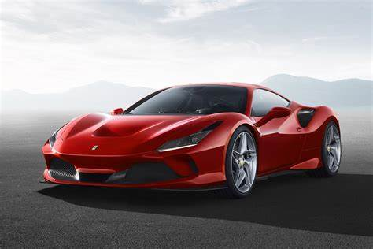
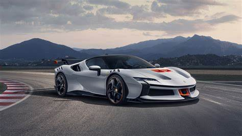

History
Ferrari is an iconic Italian luxury sports car manufacturer, founded by Enzo Ferrari in 1939 out of Alfa Romeo's race division, Auto Avio Costruzioni. However, the first car to bear the Ferrari name, the 125 S, was completed in 1947. Powered by a V12 engine designed by Gioachino Colombo, it marked the beginning of Ferrari's legacy in high-performance engineering. Ferrari quickly established itself in motorsport, particularly in Formula One, where it became one of the most successful teams in history. The brand won its first Formula One World Championship in 1951 and has since become synonymous with racing excellence. Over the decades, Ferrari has built a reputation not just for performance but also for style, with models like the 250 GTO and F40 and modern icons like the LaFerrari capturing the imagination of car lovers around the world. Today, the Ferrari remains a symbol of speed, luxury, and Italian craftsmanship, and it has a strong presence in both motorsport and the global luxury car market.
Products
| Ferrari 458 Italia | Ferrari F8 Tributo | Ferrari SF90 Stradale |
|---|---|---|
 |
 |  |
| $160,000 to $250,000 | $260,000 to $350,000+ | $500,000 to $700,000+ |
| The 458 Italia features a naturally aspirated V8 engine and is celebrated for its sharp handling, stunning design, and everyday drivability. It marked a high point in Ferrari’s mid-engine V8 lineup before turbocharging took over. | The F8 Tributo is a twin-turbo V8 supercar that pays homage to Ferrari’s V8 legacy, offering 710 horsepower and blistering performance. It combines modern aerodynamics, sleek styling, and advanced tech for an exhilarating yet refined drive. | Ferrari’s first plug-in hybrid, the SF90 Stradale, produces nearly 1,000 horsepower through a combination of a twin-turbo V8 and three electric motors. It’s a tech masterpiece that blends extreme speed with cutting-edge innovation. |